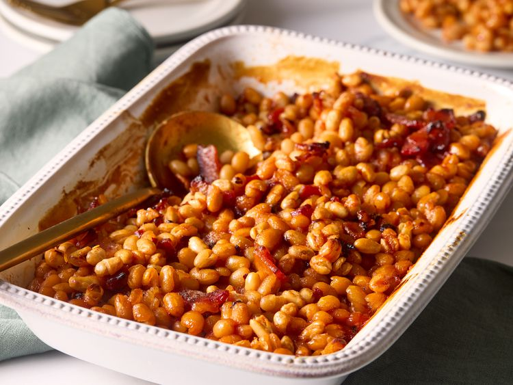

Hot Honey Baked Beans
Home

Hot Honey Baked Beans Recipe
A fun twist on classic baked beans adding sweet and spicy flavors.
Ingredients
- 4 slices bacon, chopped
- 1/2 cup chopped onion
- 2 cloves garlic, minced
- 3 cans navy beans, rinsed and drained
- 1/2 cup honey
- 1/2 cup ketchup
- 1 tablespoon yellow mustard
- 1 tablespoon Worcestershire sauce
- 1 tablespoon cayenne pepper sauce
- 1/2 teaspoon crushed red pepper
- 1/2 teaspoon black pepper
Directions
- Gather all ingredients. Preheat the oven to 350 degrees F (175 degrees C). Lightly grease a 2-quart baking dish.
- Cook bacon and onion in a 10-inch skillet until onion is tender and bacon is crisp, 6 to 8 minutes. Add garlic and cook until fragrant, 1 minute more.
- Transfer mixture to a large bowl. Add beans, honey, ketchup, mustard, Worcestershire sauce, cayenne pepper sauce, crushed red pepper, and black pepper; stir to combine.
- Pour mixture into the prepared baking dish; cover with foil.
- Bake in the preheated oven for 30 minutes. Remove foil and continue baking until mixture is hot and sauce is thickened and bubbly, about 30 minutes longer.